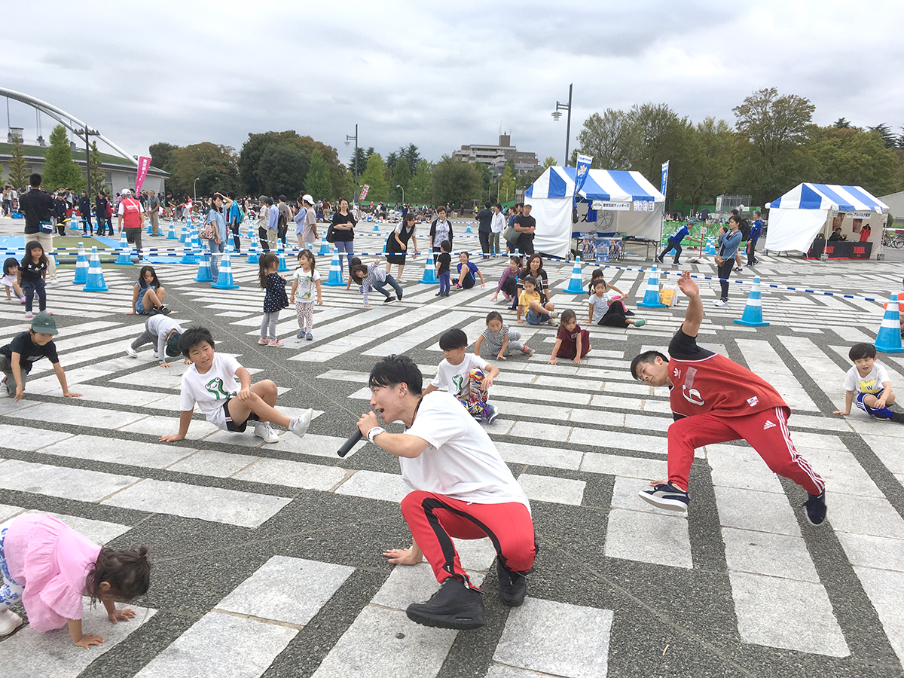
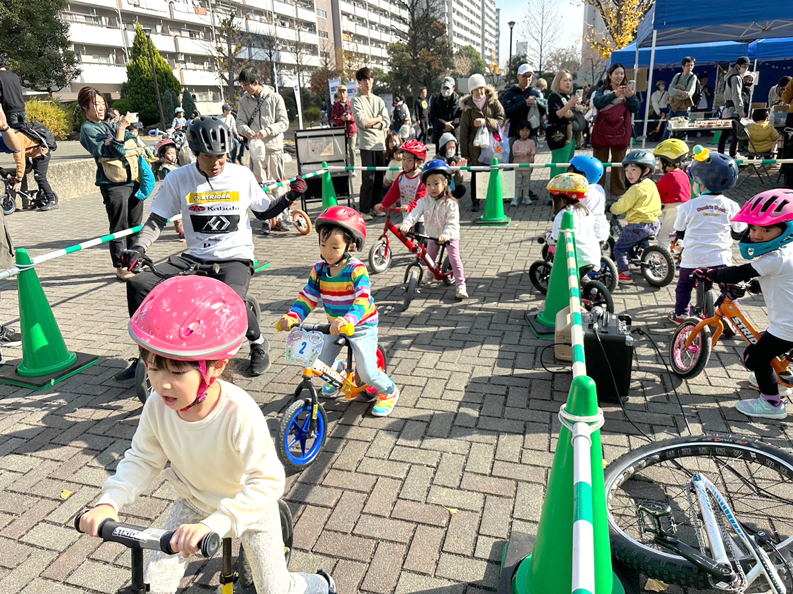
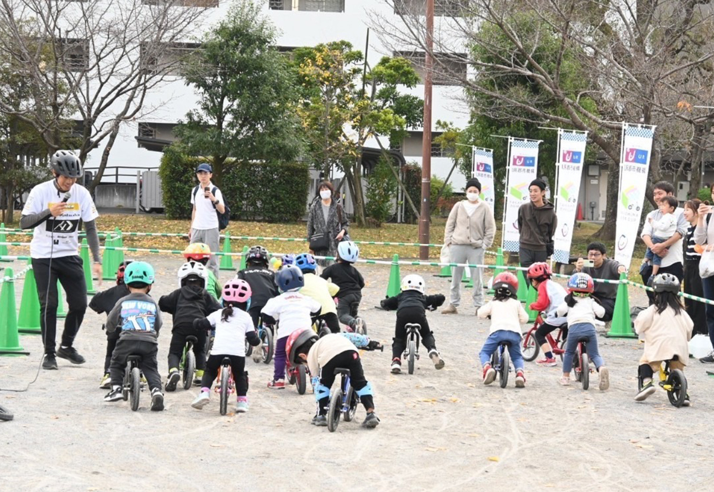
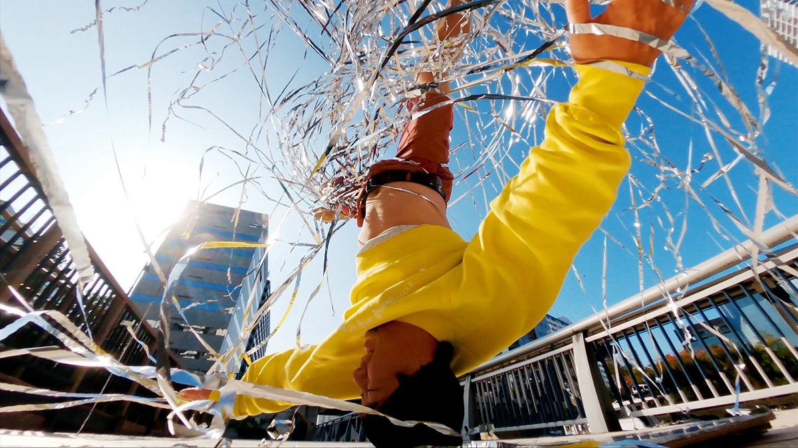

|
ランニングバイクPARK in 赤塚公園 [オリンピック新種目!ブレイキンワークショップ] 〜presented by 高島平カップ〜 |
|
| 開催日 | 2024年3月16日(土) ※雨天時は3月17(日)に順延 |
|---|---|
| 開催場所 | 東京都赤塚公園 （〒175-0082 東京都板橋区高島平３丁目１） https://www.tokyo-park.or.jp/park/format/index005.html |
| 時 間 | 10:00～16:00（予定） |
| 主 催 | UR都市機構 |
| 企画・運営 | ギャラップ・URリンケージ |
| 駐車場について | なし お車でお越しの場合は周辺の有料駐車場をご利用いただくか、周辺の公共交通機関をご利用いただきますようお願いします。 |
| アクセス | ・東武東上線「成増駅北口」から国際興業バス（高01または増17系統・高島平操車場行き）「赤塚公園」下車すぐ ・都営地下鉄三田線「高島平」〈125〉下車 徒歩10分 |
| イベントタイムテーブル | 10:00〜11:00 ランニングバイクフリー走行スタート 11:00〜11:30 ランニングバイク初心者教室(初心者限定)※定員24名 注:この時間帯のフリー走行はできません 11:30〜12:05 メインステージパフォーマンスタイム◆午前の部◆ 12:05〜12:30 ブレイキン・ダンスワークショップ★午前の部★(事前エントリー制) 12:30~13:00 ランニングバイクスタート練習 13:00〜13:30 ランニングバイク模擬レース 13:30〜14:00 ランニングバイクレース攻略講座(上級者向け)※定員24名 注:この時間帯のフリー走行はできません 14:00〜14:35 メインステージパフォーマンスタイム◆午後の部◆ 14:35〜15:00 ブレイキン・ワークショップ★午後の部★(事前エントリー制) 15:00~15:30 フリー走行 16:00 ランニングバイクフリー走行終了 注:タイムスケジュールは今後変更になる場合がございます。 |
| メインステージパフォーマンス詳細 | ◆午前の部◆メインステージパフォーマンスタイム 11:30 開始 11:30〜11:35 オープニング 11:35〜11:50 プロダンサーショーケース(パフォーマンス15分) 11:50〜12:05 バイクパフォーマンス(パフォーマンス15分) 12:05〜12:30 ブレイキン・ワークショップ(4x8からのフリーズ)(定員25名) ◆午後の部◆メインステージパフォーマンスタイム 14:00開始 14:00〜14:05 オープニング 14:05〜14:20 プロダンサーショーケース(パフォーマンス15分) 14:20〜14:35 有薗バイクパフォーマンス(パフォーマンス15分) 14:35〜15:00 ブレイキン・ワークショップ(4x8からのフリーズ)(定員25名) |
■ブレイキン・ワークショップ ダンス
pets実施時間：①12:05 〜 12:30 ②14:35 〜 15:00
pets受付方法：事前受付 お申し込みはこちら
pets定員：先着24名(1月29日(月)より受付開始)
pets対象年齢：2才 〜 小学3年生
pets参加費：無料(保護者同伴の上で無記名アンケートにご協力頂ける方)
pets内容：2024年のパリオリンピックの正式種目として最近注目されているブレイキン! プロのブレイクダンサーからダンスを教えてもらって楽しく踊ろう! ダンス未経験でも大丈夫。 ワークショップ後半では、実際にステージの上で簡単なショーを行います。 最後はみんなで一緒に踊ってカッコよく決めようぜ!

■フリー走行 ランニングバイク
pets実施時間：10:00 〜 16:00
pets受付方法：当日受付(本部テントで受付)
pets定員：なし
pets対象年齢：2才〜6才(未就学児)
pets参加資格：2才～6才(未就学児)で保護者の方が無記名アンケートにご協力いただける方
pets参加費：無料
pets内容：ランニングバイクで本格的なコースを思いっきり走ろう!
レースに参加したことがないお子様大歓迎!
友達みんなで走るととても楽しいよ!
※ストライダーのレンタルあり
※レンタル数には限りがございます。混雑時にはお待ちいただく場合がございます
※ヘルメット着用が必須です

■ランニングバイク初心者教室(初心者限定) ランニングバイク
pets実施時間：11:00 〜 11:30
pets受付方法：当日受付(本部テントで受付)
pets定員：先着24名(10:00より受付開始)
pets対象年齢：2才〜6才(未就学児)
pets参加資格：2才～6才(未就学児)で保護者の方が無記名アンケートにご協力いただける方
pets参加費：無料
pets内容：ランニングバイクに乗ったことがないお子様でも大丈夫!
バイクトライアル世界チャンピオンの有薗選手が楽しく丁寧に教えてくれます!乗り方の基礎がしっかりと学べる教室です!
※ストライダーのレンタルあり
※レンタル数には限りがございます。混雑時にはお待ちいただく場合がございます
※ヘルメット着用が必須です

■レース攻略講座(上級者向け) ランニングバイク
pets実施時間：13:30 〜 14:00
pets受付方法：当日受付(本部テントで受付)
pets定 員：先着24名(12:40より受付開始)
pets対象年齢：2才〜6才(未就学児)
pets参加資格：2才～6才(未就学児)で保護者の方が無記名アンケートにご協力いただける方
pets参加費：無料
pets内 容：高島平カップで使用した障害物などを使用して「スタート」や「コーナリング」などのテクニックをバイクトライアル世界チャンピオンの有薗選手がレクチャーします。
この機会にたくさん教えてもらって上達しちゃおう!
※ストライダーのレンタルあり
※レンタル数には限りがございます。混雑時にはお待ちいただく場合がございます
※ヘルメット着用が必須です

■講師情報
有薗 啓剛（ありぞの けいごう）
京都府出身。バイクトライアル1996年世界チャンピオン、8年連続全日本タイトルを保持。その後、マッスルミュージカル、シルク・ドゥ・ソレイユなどに出演。
全国の幼稚園や保育園での早期二輪車安全指導を実施している。

■講師情報
大野 愛地(おおの あいち)
京都府出身。1分間一度も手を使わず142回転するヘッドスピンの世界記録保持者。
グラミー賞にノミネートされたアメリカのアーティスト“LMFAO”の公式メンバーであり、2016年に米国テレビ芸術科学アカデミー主催の世界各国から大注目を受ける「エミー賞」にて Outstanding Choreography を見事受賞した“Quest Crew”の公式メンバーである。
